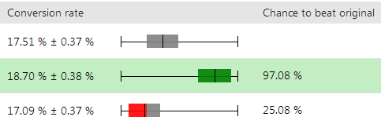

Analyzing A/B test results
You can find all your A/B test data on a single overview page. You can access an A/B test's Overview tab in the following two ways:
Open the Pages application.
Select the page that is being tested.
Switch to the Analytics -> A/B tests tab.
Edit (
 ) the test for which you want to see an overview.
) the test for which you want to see an overview.
—OR—
Open the A/B tests application.
Edit (
) the test for which you want to see an overview.
Making modifications to running A/B tests
It is not recommended to make modifications, such as adding or deleting variants, to already running A/B tests. This would make the information provided by the test unreliable.
Kentico EMS required
Features described on this page require the Kentico EMS license.
Conversion goals
In the Conversion goals drop-down list, you can select the goals that you wish to view. The graph then shows how each of the variants is doing in the particular conversion goal.
Analyzing the test using all the available conversion goals on your site can be helpful and give you new insights. Most of the time, though, it's better to use a smaller number of conversion goals. To do that, edit out the conversion goals that visitors can't realistically perform on the variants. To edit the conversion goals available in the drop-down list, switch to the test's Settings tab and modify the Displayed conversion goals field in the Advanced settings category.
Success metric
Using the Success metric drop-down list, you can change the conversion data presented on the graph:
Conversion rate – indicates how many visitors of the page perform a conversion (conversion / visit ratio) selected in the Conversion goals drop-down list.
This is a general metric that you can use for pretty much any conversion goal in most A/B tests.
This success metric doesn't provide useful results when viewing it together with all conversion goals. The differences between various conversion goals make the results irrelevant. For example, viewing Conversion rate for newsletter subscription (a conversion that provides a one-time action relevant results) together with conversion measuring set up to for each article a visitor reads would most likely provide unusable results.
Conversion value – displays the sum of logged conversion values for the conversion goals selected in the Conversion goals drop-down list.
This metric is useful mainly to verify that a higher number of conversions on a variant also yields a higher value.
Average conversion value – displays the average value of the logged conversions for the conversion goals selected in the Conversion goals drop-down list.
An example of using this metric is an e-commerce site, where you're interested in how a change made to a variant affects the average value of the visitors' shopping cart.
Conversion count – displays the number of conversions for the conversion goals selected in the Conversion goals drop-down list.
Counting methodology
In the Counting methodology drop-down list you can change the kind of page visits represented on the graph:
Visitor conversion – the number of visitors that made a conversion on the page through any of their visits on the page.
Use this methodology for analyzing the success one-time visitor conversions. An example is whether a visitor subscribed to your newsletter. Another example is whether a visitor filled out your lead generation form.
Visit conversion – the number of visits during which visitors made any conversion.
Use this methodology for analyzing whether visitors perform repeating conversions. An example is whether a visitor books a service on your variant during each visit. Another example is whether a visitor buys a consumable product during each visit, such as printer ink.
Every conversion – the total number of conversions. Note that a single visitor can make multiple conversions during a single visit.
Use this methodology when you're interested in every conversion a visitor makes. For example, if you want to know how many articles a visitor opens after visiting your variant.
Culture
A variant may be doing differently in different cultures. Make sure you analyze the relevant success metrics in all the tested cultures via the Culture drop-down list.
Chance to beat the original
Chance to beat original is the percentage confidence that you can have in a variation outperforming the original variant. For example, 97% Chance to beat original means that there is a 97% confidence that the variant will outperform the original variant in a real scenario. That means that there is still a 3% probability that the variant won't outperform the original variant. Note that this Chance to beat original is available only when using the Conversion rate success metric.
Significance is set to 80%. That is, once Chance to beat original reaches 80 % or more for a variant, it is marked as significant and its background turns green.
The following picture shows an original variant at the top and two other variants, each of which has a different Chance to beat original.

Whether there is an overlap between variants is calculated using the range of the Conversion rate next to the sliders.
Green slider (first variant) – does not overlap the original. The original has the highest Conversion rate of 17.88%. The lowest Conversion of the variant is 18.32% so there's a 0.44% gap.
Red/gray slider (second variant) – overlaps the original variant slightly in the gray area. The original has the lowest Conversion rate of 17.14%. The second variant has the highest Conversion rate of 17.46%.
Selecting an A/B test winner
When a test finishes or when you've gathered enough information to decide which variant provides the best conversions, you can select the variant as a winner. The selected variant is marked as a winner in the test overview.
When is the best time to end an A/B test?
It is not recommended to finish a test prematurely. For example, ending a test as soon as a variant becomes significant without gathering enough data can lead to choosing a wrong variant. Always wait for the test to end or for gathering enough data before you select a winner. Also, make sure that you analyze different success metric / counting methodology combinations before ending a test.
At the minimum, an A/B test should be running for 14 days.
Also, the test should have, at the very least, 100 or more conversions.
To select a winning A/B variant:
Open the A/B tests application.
Edit (
 ) the A/B test in which you want to push the variant on.
) the A/B test in which you want to push the variant on.Navigate to the Overview tab.
Use the Finish test button and select the variant that you want to the system to mark as a winner.
—OR—Click Select variant as winner ( ) next to the variant that you want the system to mark as a winner.
Note that selecting a winning variant finishes the test.
Once the winner is selected, you need to manually make corresponding changes to pages in the Pages application in the content tree so it reflects the result of the A/B test.